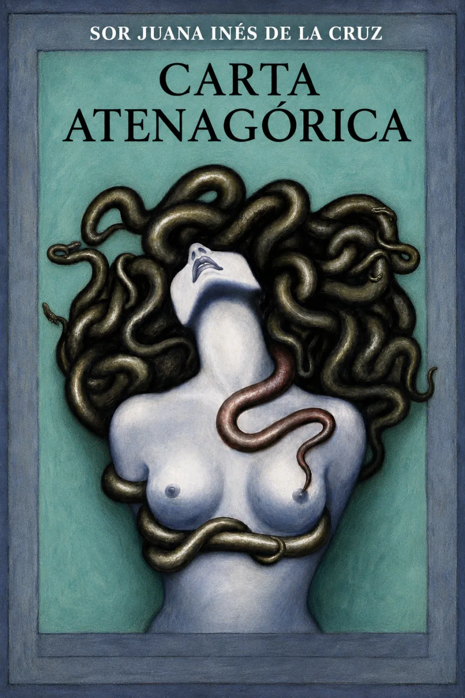

Discutir desde el conocimiento
En esta crítica al Sermón del Mandato del jesuita portugués António Vieira, Sor Juana examina las finezas de Cristo: las demostraciones de su amor. Revisa argumentos, contrasta autoridades y defiende posiciones de san Agustín, santo Tomás y san Juan Crisóstomo frente a la propuesta del predicador.
La erudición no adorna la discrepancia: la sostiene.
El texto apareció en 1690 por iniciativa del obispo de Puebla, Manuel Fernández de Santa Cruz. Su circulación forma parte de la polémica que precede a la Respuesta a Sor Filotea de 1691. Las circunstancias de publicación y el alcance de la intervención del obispo han sido objeto de debate crítico.
Contexto: «Las razones de Sor Juana Inés de la Cruz» y «Poner riquezas en mi entendimiento», Biblioteca Virtual Miguel de Cervantes. El taller de la cabecera es una interpretación artística, no una reconstrucción de la imprenta original.
La lectura
Carta atenagórica · Lectura completa
Una clave de escucha: distinguir la tesis de Vieira, las objeciones de Sor Juana y su propia propuesta sobre el amor divino. Esta orientación no añade capítulos al texto.
Reseñas

Bueno